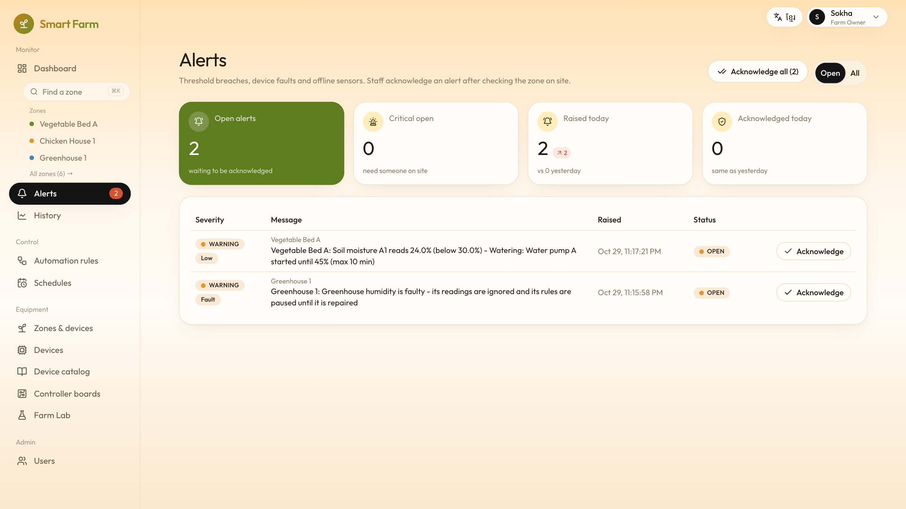
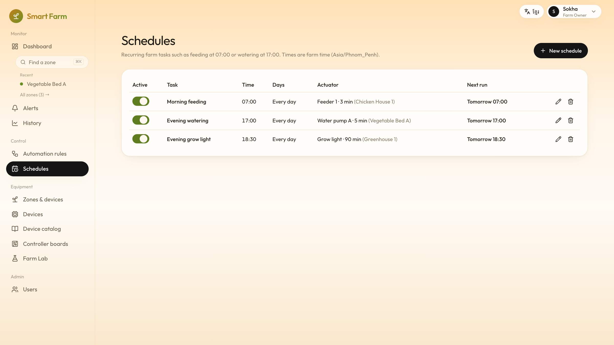
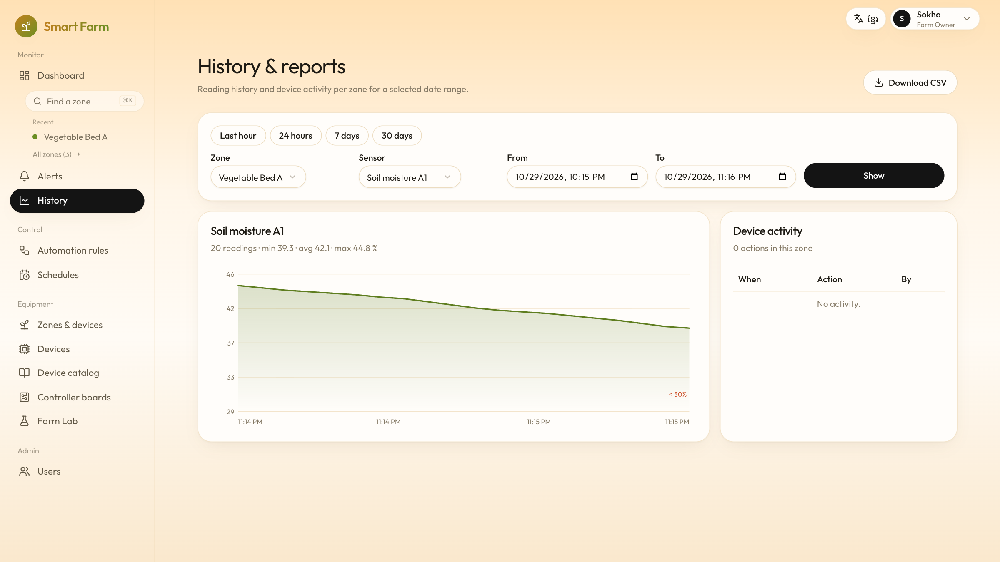
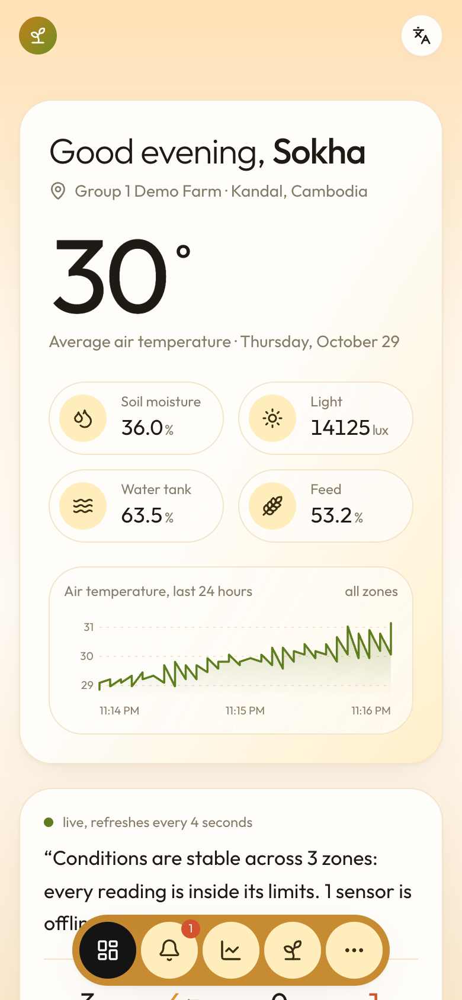
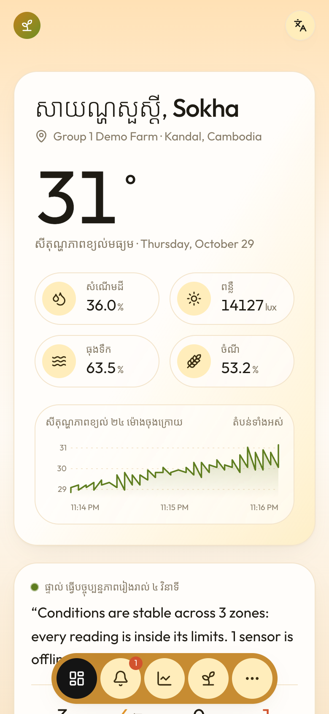

Smart Farm Monitoring · Guide for farm users
Your farm
watches itself
Sensors check the soil, the air and the feed day and night.
Pumps, fans and feeders start by themselves, and you get a message when something needs you.
For farm owners, workers and technicians
Why
Checking a farm by hand finds problems too late
1
The problem
Dry soil, a hot chicken house or an empty feeder are often found hours later: plants and animals suffer, water and feed are wasted.
2
What Smart Farm does
Small sensors in each bed, greenhouse and chicken house measure all the time. When something is wrong, the right machine starts.
3
What you get
A reaction in seconds instead of hours, fewer losses, less walking around, and a record of everything that happened.
How it works
Measure, decide, act, tell you
1
Measure
Sensors send soil moisture, temperature, humidity, light, feed and water levels every few seconds.
2
Decide
Your rules say what is normal, for example “soil wetter than 30 %”.
3
Act
Outside the normal range, the pump, fan, heater, mister, light or feeder starts, and stops when it is fixed.
4
Tell you
An alert appears in the app and, if you like, on Telegram on your phone.
Who uses it
Everyone sees what they need, and only that
| Person | What they do in the app |
|---|---|
| Farm owner | Everything: zones, rules, schedules and staff accounts |
| Farm worker | Watches the farm, starts and stops machines, marks alerts as seen |
| Technician | Installs devices, reports broken ones and repairs them |
| Company staff | Set up new customer farms and help them, only when the owner allows it |
Each person signs in with their own password. A worker never sees a button they are not allowed to use.
Every day
The whole farm on one screen
A greeting, the average temperature and a short summary of how the farm is doing.
Each zone shows its values; the most stressed zones come first.

Every day
Each zone has its own page
The current values, how long today it stayed in the good range, its machines and alerts.
Below: a chart of the last 24 hours, how long each machine ran, and what happened.

When something is wrong
Alerts tell you what happened and what was done
“Vegetable Bed A: Soil moisture A1 reads 24.0% (below 30.0%) - Watering: Water pump A started”
Mark an alert as seen, and the app shows when the value is back in range.

Rules
It keeps the chicken house comfortable, like a thermostat
Too hot: above 32 °C the fan starts, and it keeps running until the house is back to 29 °C.
Too cold: below 18 °C the heater starts, and stops at 21 °C.
Never both: the fan and the heater never run at the same time. Each machine also has a longest run, as a safety limit.
Rules
Setting a rule is one short form
Choose the sensor, when to start, the machine, and when to stop.
The form explains the rule in a sentence before you save it.

Rules
Rules that would fight are refused
A heater that runs up to 34 °C would fight the fan that starts at 32 °C.
The app says which two rules clash and what to change.

Routine work
Schedules for the jobs you do every day
Feed the chickens every morning at 7:00, water the beds at 17:00.
Schedules follow the farm’s own clock, Phnom Penh time.

Equipment
Every device on one page
Each sensor and machine with its status and latest value.
“Need attention” shows only what is broken or offline.

Equipment
A broken sensor cannot fool the farm
1
Report fault
Its readings are ignored and its rules wait, so a wrong value cannot start the pump.
2
Repair and test
The technician fixes it; it is back only after a good reading arrives.

Equipment
Adding a device takes one page
Pick the zone and the kind of device; each kind says what it is for.
After saving, the app shows how to connect the board and offers to make a rule.

Equipment
Choose hardware from the catalog
About 40 common sensors and machines, with a picture, what they measure, voltage and price.
A farm can add its own models too.

Looking back
History and reports
Charts of any sensor for a day, a week or your own dates.
Download the readings as a spreadsheet file (CSV).

Anywhere
On your phone, in Khmer or English
The same app works on a phone, with a tab bar at the bottom.
Switch the language in one tap; the app remembers it.


Try it first
Farm Lab: practise without any hardware
Virtual sensors and machines behave like a small farm.
Play a dry spell, a heat wave or a power cut and see how the system reacts.

For the company
Many customer farms, one system
The company sets up each farm and invites its owner with a link.
Each farm only ever sees its own data; support helps only when the owner allows it.

Peace of mind
Safe, private and tested
1
Accounts
Own password for everyone. Five wrong tries lock the name for 15 minutes. Staying signed in survives a server restart.
2
Privacy
Each farm sees only its own zones, devices and alerts. No passwords or keys are kept in plain text.
3
Tested
73 automatic checks, a 34-step walk through every screen, and 17 farm situations like drought and power cuts.
In short
Less walking, faster reaction, fewer losses
Sensors watch → rules react → you are told → everything is recorded
Smart Farm Monitoring · Thank you